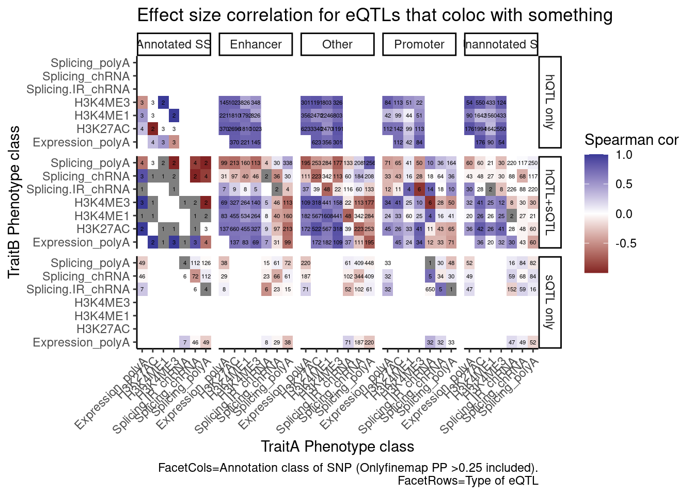
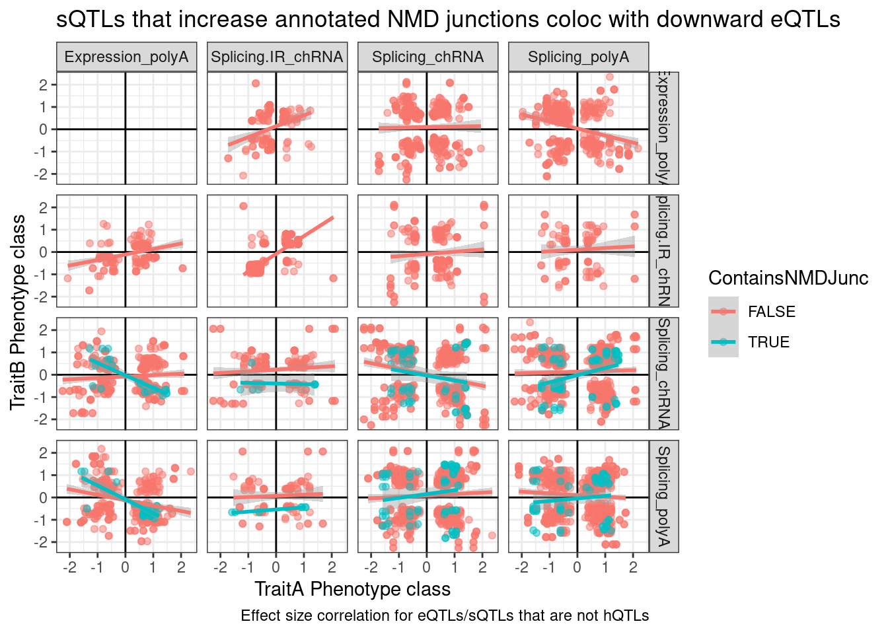

Does intron retention down regulate gene expression
Last updated: 2022-10-12
Checks: 6 1
Knit directory: ChromatinSplicingQTLs/analysis/
This reproducible R Markdown analysis was created with workflowr (version 1.6.2). The Checks tab describes the reproducibility checks that were applied when the results were created. The Past versions tab lists the development history.
The R Markdown is untracked by Git. To know which version of the R Markdown file created these results, you’ll want to first commit it to the Git repo. If you’re still working on the analysis, you can ignore this warning. When you’re finished, you can run wflow_publish to commit the R Markdown file and build the HTML.
Great job! The global environment was empty. Objects defined in the global environment can affect the analysis in your R Markdown file in unknown ways. For reproduciblity it’s best to always run the code in an empty environment.
The command set.seed(20191126) was run prior to running the code in the R Markdown file. Setting a seed ensures that any results that rely on randomness, e.g. subsampling or permutations, are reproducible.
Great job! Recording the operating system, R version, and package versions is critical for reproducibility.
Nice! There were no cached chunks for this analysis, so you can be confident that you successfully produced the results during this run.
Great job! Using relative paths to the files within your workflowr project makes it easier to run your code on other machines.
Great! You are using Git for version control. Tracking code development and connecting the code version to the results is critical for reproducibility.
The results in this page were generated with repository version ae6409c. See the Past versions tab to see a history of the changes made to the R Markdown and HTML files.
Note that you need to be careful to ensure that all relevant files for the analysis have been committed to Git prior to generating the results (you can use wflow_publish or wflow_git_commit). workflowr only checks the R Markdown file, but you know if there are other scripts or data files that it depends on. Below is the status of the Git repository when the results were generated:
Ignored files:
Ignored: .DS_Store
Ignored: .Rhistory
Ignored: .Rproj.user/
Ignored: analysis/.Rhistory
Ignored: code/%
Ignored: code/.DS_Store
Ignored: code/.RData
Ignored: code/._.DS_Store
Ignored: code/._README.md
Ignored: code/._report.html
Ignored: code/.ipynb_checkpoints/
Ignored: code/.snakemake/
Ignored: code/APA_Processing/
Ignored: code/Alignments/
Ignored: code/ChromHMM/
Ignored: code/ENCODE/
Ignored: code/ExpressionAnalysis/
Ignored: code/FastqFastp/
Ignored: code/FastqFastpSE/
Ignored: code/Genotypes/
Ignored: code/IntronSlopes/
Ignored: code/Metaplots/
Ignored: code/Misc/
Ignored: code/MiscCountTables/
Ignored: code/Multiqc/
Ignored: code/Multiqc_chRNA/
Ignored: code/NonCodingRNA_annotation/
Ignored: code/PeakCalling/
Ignored: code/Phenotypes/
Ignored: code/PlotGruberQTLs/
Ignored: code/PlotQTLs/
Ignored: code/ProCapAnalysis/
Ignored: code/QC/
Ignored: code/QTL_SNP_Enrichment/
Ignored: code/QTLs/
Ignored: code/ReferenceGenome/
Ignored: code/Rplots.pdf
Ignored: code/Session.vim
Ignored: code/SplicingAnalysis/
Ignored: code/TODO
Ignored: code/Tehranchi/
Ignored: code/bigwigs/
Ignored: code/bigwigs_FromNonWASPFilteredReads/
Ignored: code/config/.DS_Store
Ignored: code/config/._.DS_Store
Ignored: code/config/.ipynb_checkpoints/
Ignored: code/debug.ipynb
Ignored: code/debug_python.ipynb
Ignored: code/deepTools/
Ignored: code/featureCounts/
Ignored: code/gwas_summary_stats/
Ignored: code/hyprcoloc/
Ignored: code/igv_session.xml
Ignored: code/log
Ignored: code/logs/
Ignored: code/notebooks/.ipynb_checkpoints/
Ignored: code/rules/.ipynb_checkpoints/
Ignored: code/rules/OldRules/
Ignored: code/rules/notebooks/
Ignored: code/scratch/
Ignored: code/scripts/.ipynb_checkpoints/
Ignored: code/scripts/GTFtools_0.8.0/
Ignored: code/scripts/__pycache__/
Ignored: code/scripts/liftOverBedpe/liftOverBedpe.py
Ignored: code/snakemake.log
Ignored: code/snakemake.sbatch.log
Ignored: data/.DS_Store
Ignored: data/._.DS_Store
Ignored: data/._20220414203249_JASPAR2022_combined_matrices_25818_jaspar.txt
Ignored: data/GWAS_catalog_summary_stats_sources/._list_gwas_summary_statistics_6_Apr_2022-10.csv
Ignored: data/GWAS_catalog_summary_stats_sources/._list_gwas_summary_statistics_6_Apr_2022-11.csv
Ignored: data/GWAS_catalog_summary_stats_sources/._list_gwas_summary_statistics_6_Apr_2022-2.csv
Ignored: data/GWAS_catalog_summary_stats_sources/._list_gwas_summary_statistics_6_Apr_2022-3.csv
Ignored: data/GWAS_catalog_summary_stats_sources/._list_gwas_summary_statistics_6_Apr_2022-4.csv
Ignored: data/GWAS_catalog_summary_stats_sources/._list_gwas_summary_statistics_6_Apr_2022-5.csv
Ignored: data/GWAS_catalog_summary_stats_sources/._list_gwas_summary_statistics_6_Apr_2022-6.csv
Ignored: data/GWAS_catalog_summary_stats_sources/._list_gwas_summary_statistics_6_Apr_2022-7.csv
Ignored: data/GWAS_catalog_summary_stats_sources/._list_gwas_summary_statistics_6_Apr_2022-8.csv
Ignored: data/GWAS_catalog_summary_stats_sources/._list_gwas_summary_statistics_6_Apr_2022.csv
Untracked files:
Untracked: analysis/20221011_PlotHeatmapManyWays_ncRNA_Updated.Rmd
Untracked: analysis/20221012_IntronRetentionAndExpressionConcordance.Rmd
Untracked: code/rules/Metaplots.smk
Untracked: code/scripts/MakeBigwigList.R
Untracked: code/scripts/TidyDeeptoolsComputeMatrix.R
Untracked: code/snakemake_profiles/slurm/__pycache__/
Unstaged changes:
Modified: code/Snakefile
Modified: code/rules/CalculatePi1.smk
Modified: code/rules/QTLTools.smk
Modified: code/scripts/CalculatePi1_GetAscertainmentP_AllPairs.py
Modified: code/scripts/CalculatePi1_GetTraitPairs_AllTraits.R
Modified: code/scripts/GenometracksByGenotype
Modified: data/ColorsForPhenotypes.xlsx
Modified: data/Phenotypes_recode_for_Plotting.txt
Note that any generated files, e.g. HTML, png, CSS, etc., are not included in this status report because it is ok for generated content to have uncommitted changes.
There are no past versions. Publish this analysis with wflow_publish() to start tracking its development.
Intro
I previously showed that effect size directions for intron retention QTLs puzzingly positively correct with eQTLs (more intron retention = more expression). Somehow I think intron retention QTLs are often picking up on chromatin effects. Let’s break up the intron retention QTLs into groups by the location of the SNP (in a enhancer/promoter vs a splice site) and reassess the concordance of expression effects. I can also look at the same idea with normal leafcutter sQTLs, comparing introns by their annotation type. For example increase in splicing of annotated or “basic” tagged introns might generally increase expression, versus increase in unannoated or “NMD” tagged introns might decrease expression.
library(tidyverse)First let’s make some basic plots establishing that chRNA has more unannoated and NMD-specific splicing.
#TODOLet’s
PhenotypeAliases <- read_tsv("../data/Phenotypes_recode_for_Plotting.txt")
PC.ShortAliases <- PhenotypeAliases %>%
dplyr::select(PC, ShorterAlias) %>% deframe()
coloc.results <- read_tsv("../code/hyprcoloc/Results/ForColoc/MolColocStandard/results.txt.gz")
coloc.results.tidycolocalized <- read_tsv("../code/hyprcoloc/Results/ForColoc/MolColocStandard/tidy_results_OnlyColocalized.txt.gz") %>%
separate(phenotype_full, into=c("PC", "P"), sep=";")
finemap.snps.annotated <- read_tsv("../code/QTL_SNP_Enrichment/FinemapIntersections/MolColocStandard.bed.gz", col_names=c("SNPchrom", "SNPstart", "SNPstop", "SNP_iteration_locus", "FinemapPP", "AnnotationChrom", "AnnotationStart", "AnnotatioStop", "AnnotationClass", "Overlap")) %>%
dplyr::select(-Overlap)Count chromatin-colocalizing and splicing-colocalizing eQTLs, and recreate previous observation about concordant effects
coloc.results.tidycolocalized %>%
group_by(Locus, snp) %>%
filter(any(PC=="Expression.Splicing.Subset_YRI")) %>%
summarise(
ContainsChromatinEqtl = any(PC %in% c("H3K27AC", "H3K4ME1", "H3K4ME3")),
ContainsSqtl = any(PC %in% c("polyA.Splicing.Subset_YRI", "chRNA.Splicing", "chRNA.IER"))
) %>%
ggplot(aes(x=1, fill=paste(ContainsChromatinEqtl, ContainsSqtl))) +
geom_bar() +
labs(title="More chromatin localization with eQTLs than splicing", y="Number of colocalizing eQTLs") +
theme_classic() +
theme(axis.title.x=element_blank(),
axis.text.x=element_blank(),
axis.ticks.x=element_blank())
coloc.results.tidycolocalized %>%
group_by(Locus, snp) %>%
filter(any(PC=="Expression.Splicing.Subset_YRI")) %>%
ungroup() %>%
filter(PC %in% c("Expression.Splicing.Subset_YRI","H3K27AC", "H3K4ME1", "H3K4ME3", "polyA.Splicing.Subset_YRI", "chRNA.Splicing", "chRNA.IER")) %>%
left_join(., ., by=c("Locus", "snp")) %>%
filter(!((P.x == P.y) & (PC.x == PC.y))) %>%
group_by(Locus, snp) %>%
mutate(
ContainsChromatinEqtl = any(PC.x %in% c("H3K27AC", "H3K4ME1", "H3K4ME3")),
ContainsSqtl = any(PC.x %in% c("polyA.Splicing.Subset_YRI", "chRNA.Splicing", "chRNA.IER"))
) %>%
ungroup() %>%
mutate(Contains.eQTL_Contains.sQTL = paste(ContainsChromatinEqtl, ContainsSqtl)) %>%
group_by(Contains.eQTL_Contains.sQTL, PC.x, PC.y) %>%
summarise(cor = cor(beta.x, beta.y, method="spearman")) %>%
mutate(PC.x = recode(PC.x, !!!PC.ShortAliases)) %>%
mutate(PC.y = recode(PC.y, !!!PC.ShortAliases)) %>%
ggplot(aes(x=PC.x, y=PC.y, fill=cor)) +
geom_raster() +
scale_fill_gradient2() +
facet_wrap(~Contains.eQTL_Contains.sQTL) +
scale_x_discrete(expand=c(0,0)) +
scale_y_discrete(expand=c(0,0)) +
theme_classic() +
theme(axis.text.x = element_text(angle = 45, vjust = 1, hjust=1)) +
labs(x="TraitA Phenotype class", y="TraitB Phenotype class", fill="Spearman cor", title="Effect size correlation",
caption = "FacetTitle: IsChromatinQTL IsSplicingQTL")
Now split QTLs by location of SNP as either in splice site, in enhancer/promoter, or neither
#annotation types
finemap.snps.annotated$AnnotationClass %>% unique() [1] "SpliceBranchpointRegion_0" "10_Txn_Elongation"
[3] "6_Weak_Enhancer" "SpliceDonor_0"
[5] "2_Weak_Promoter" "11_Weak_Txn"
[7] "1_Active_Promoter" "12_Repressed"
[9] "4_Strong_Enhancer" "13_Heterochrom/lo"
[11] "SpliceAcceptor_0" "SpliceBranchpointRegion_1"
[13] "ncRNA_coRNA" "ncRNA_pseudo"
[15] "9_Txn_Transition" "SpliceAcceptor_1"
[17] "ncRNA_srtRNA" "8_Insulator"
[19] "ncRNA_uaRNA" "5_Strong_Enhancer"
[21] "7_Weak_Enhancer" "SpliceDonor_1"
[23] "PAS_Region" "ncRNA_incRNA"
[25] "3_Poised_Promoter" "."
[27] "14_Repetitive/CNV" "ncRNA_ctRNA"
[29] "15_Repetitive/CNV" "ncRNA_lncRNA"
[31] "ncRNA_rtRNA" "ncRNA_snoRNA" coloc.results.tidycolocalized %>%
group_by(Locus, snp) %>%
filter(any(PC=="Expression.Splicing.Subset_YRI")) %>%
ungroup() %>%
filter(PC %in% c("Expression.Splicing.Subset_YRI","H3K27AC", "H3K4ME1", "H3K4ME3", "polyA.Splicing.Subset_YRI", "chRNA.Splicing", "chRNA.IER")) %>%
left_join(., ., by=c("Locus", "snp")) %>%
filter(!((P.x == P.y) & (PC.x == PC.y))) %>%
group_by(Locus, snp) %>%
mutate(
ContainsChromatinEqtl = any(PC.x %in% c("H3K27AC", "H3K4ME1", "H3K4ME3")),
ContainsSqtl = any(PC.x %in% c("polyA.Splicing.Subset_YRI", "chRNA.Splicing", "chRNA.IER"))
) %>%
ungroup() %>%
mutate(Contains.eQTL_Contains.sQTL = paste(ContainsChromatinEqtl, ContainsSqtl)) %>%
dplyr::select(-iteration.y) %>%
left_join(
finemap.snps.annotated %>%
dplyr::select(SNP_iteration_locus, FinemapPP, AnnotationClass) %>%
separate(SNP_iteration_locus, into=c("snp", "iteration.x", "Locus"), convert=T, sep="_")
) %>%
filter(FinemapPP >0.25) %>%
mutate(AnnotationSuperclass = case_when(
str_detect(AnnotationClass, "Splice.+_1") ~ "Annotated SS",
str_detect(AnnotationClass, "Splice.+_0$") ~ "Unannotated SS",
str_detect(AnnotationClass, "Enhancer") ~ "Enhancer",
str_detect(AnnotationClass, "Promoter") ~ "Promoter",
TRUE ~ "Other"
)) %>%
mutate(PC.x = recode(PC.x, !!!PC.ShortAliases)) %>%
mutate(PC.y = recode(PC.y, !!!PC.ShortAliases)) %>%
mutate(Contains.eQTL_Contains.sQTL = recode(Contains.eQTL_Contains.sQTL,
!!!c("TRUE TRUE"="hQTL+sQTL",
"TRUE FALSE"="hQTL only",
"FALSE TRUE"="sQTL only"))) %>%
group_by(Contains.eQTL_Contains.sQTL, PC.x, PC.y, AnnotationSuperclass) %>%
summarise(cor = cor(beta.x, beta.y, method="spearman"), n=n()) %>%
ggplot(aes(x=PC.x, y=PC.y, fill=cor)) +
geom_raster() +
geom_text(aes(label=n), size=1.5) +
scale_fill_gradient2() +
facet_grid(rows=vars(Contains.eQTL_Contains.sQTL), cols=vars(AnnotationSuperclass)) +
scale_x_discrete(expand=c(0,0)) +
scale_y_discrete(expand=c(0,0)) +
theme_classic() +
theme(axis.text.x = element_text(angle = 45, vjust = 1, hjust=1)) +
labs(x="TraitA Phenotype class", y="TraitB Phenotype class", fill="Spearman cor", title="Effect size correlation for eQTLs that coloc with something",
caption = str_wrap("FacetCols=Annotation class of SNP (Onlyfinemap PP >0.25 included). FacetRows=Type of eQTL"))
I’m quite surprised just by the numbers of hQTL eQTLs with high finemap PP in unannoated splice site regions. This is clearly a really big annotation set that also includes lots of enhancer regions. This unannoated splice site region was defined as at least one spliced read mapping across all the data. Perhaps I shouldn’t be surprised, as any region is sufficeintly transcribed (including enhancers) will at some rate have some splice sites.
And even among the 7 intron retention QTLs that coloc with an eQTL but not hQTL, and are finemapped to annotated splice sites, the the direction of effects is if anything opposite what I was expecting
coloc.results.tidycolocalized %>%
group_by(Locus, snp) %>%
filter(any(PC=="Expression.Splicing.Subset_YRI")) %>%
ungroup() %>%
filter(PC %in% c("Expression.Splicing.Subset_YRI","H3K27AC", "H3K4ME1", "H3K4ME3", "polyA.Splicing.Subset_YRI", "chRNA.Splicing", "chRNA.IER")) %>%
left_join(., ., by=c("Locus", "snp")) %>%
filter(!((P.x == P.y) & (PC.x == PC.y))) %>%
group_by(Locus, snp) %>%
mutate(
ContainsChromatinEqtl = any(PC.x %in% c("H3K27AC", "H3K4ME1", "H3K4ME3")),
ContainsSqtl = any(PC.x %in% c("polyA.Splicing.Subset_YRI", "chRNA.Splicing", "chRNA.IER"))
) %>%
ungroup() %>%
mutate(Contains.eQTL_Contains.sQTL = paste(ContainsChromatinEqtl, ContainsSqtl)) %>%
dplyr::select(-iteration.y) %>%
left_join(
finemap.snps.annotated %>%
dplyr::select(SNP_iteration_locus, FinemapPP, AnnotationClass) %>%
separate(SNP_iteration_locus, into=c("snp", "iteration.x", "Locus"), convert=T, sep="_")
) %>%
filter(FinemapPP >0.25) %>%
mutate(AnnotationSuperclass = case_when(
str_detect(AnnotationClass, "Splice.+_1") ~ "Annotated SS",
str_detect(AnnotationClass, "Splice.+_0$") ~ "Unannotated SS",
str_detect(AnnotationClass, "Enhancer") ~ "Enhancer",
str_detect(AnnotationClass, "Promoter") ~ "Promoter",
TRUE ~ "Other"
)) %>%
mutate(PC.x = recode(PC.x, !!!PC.ShortAliases)) %>%
mutate(PC.y = recode(PC.y, !!!PC.ShortAliases)) %>%
mutate(Contains.eQTL_Contains.sQTL = recode(Contains.eQTL_Contains.sQTL,
!!!c("TRUE TRUE"="hQTL+sQTL",
"TRUE FALSE"="hQTL only",
"FALSE TRUE"="sQTL only"))) %>%
filter(Contains.eQTL_Contains.sQTL=="sQTL only" & AnnotationSuperclass=="Annotated SS") %>%
ggplot(aes(x=beta.x, y=beta.y)) +
geom_point() +
geom_vline(xintercept=0) +
geom_hline(yintercept=0) +
facet_grid(rows=vars(PC.x), cols=vars(PC.y)) +
theme_bw() +
labs(x="TraitA Phenotype class", y="TraitB Phenotype class", title="Effect size correlation for eQTLs/sQTLs that are not hQTLs",
caption = str_wrap("Only SNPs with finemap PP > 0.25 in annotated splice site SNP included"))
Note there are only a few points of chRNA.IR intron retention with SNPs in splice sites that coloc with eQTL.
Let’s also break the original plot by ncRNAs for SNP regions
coloc.results.tidycolocalized %>%
group_by(Locus, snp) %>%
filter(any(PC=="Expression.Splicing.Subset_YRI")) %>%
ungroup() %>%
filter(PC %in% c("Expression.Splicing.Subset_YRI","H3K27AC", "H3K4ME1", "H3K4ME3", "polyA.Splicing.Subset_YRI", "chRNA.Splicing", "chRNA.IER")) %>%
left_join(., ., by=c("Locus", "snp")) %>%
filter(!((P.x == P.y) & (PC.x == PC.y))) %>%
group_by(Locus, snp) %>%
mutate(
ContainsChromatinEqtl = any(PC.x %in% c("H3K27AC", "H3K4ME1", "H3K4ME3")),
ContainsSqtl = any(PC.x %in% c("polyA.Splicing.Subset_YRI", "chRNA.Splicing", "chRNA.IER"))
) %>%
ungroup() %>%
mutate(Contains.eQTL_Contains.sQTL = paste(ContainsChromatinEqtl, ContainsSqtl)) %>%
dplyr::select(-iteration.y) %>%
left_join(
finemap.snps.annotated %>%
dplyr::select(SNP_iteration_locus, FinemapPP, AnnotationClass) %>%
separate(SNP_iteration_locus, into=c("snp", "iteration.x", "Locus"), convert=T, sep="_")
) %>%
filter(FinemapPP >0.25) %>%
mutate(AnnotationSuperclass = case_when(
str_detect(AnnotationClass, "Splice.+_1") ~ "Annotated SS",
str_detect(AnnotationClass, "Splice.+_0$") ~ "Unannotated SS",
str_detect(AnnotationClass, "Enhancer") ~ "Enhancer",
str_detect(AnnotationClass, "Promoter") ~ "Promoter",
str_detect(AnnotationClass, "ncRNA") ~ AnnotationClass,
TRUE ~ "Other"
)) %>%
group_by(Contains.eQTL_Contains.sQTL, PC.x, PC.y, AnnotationSuperclass) %>%
summarise(cor = cor(beta.x, beta.y, method="spearman"), n=n()) %>%
mutate(PC.x = recode(PC.x, !!!PC.ShortAliases)) %>%
mutate(PC.y = recode(PC.y, !!!PC.ShortAliases)) %>%
mutate(Contains.eQTL_Contains.sQTL = recode(Contains.eQTL_Contains.sQTL,
!!!c("TRUE TRUE"="hQTL+sQTL",
"TRUE FALSE"="hQTL only",
"FALSE TRUE"="sQTL only"))) %>%
ggplot(aes(x=PC.x, y=PC.y, fill=cor)) +
geom_raster() +
geom_text(aes(label=n), size=1.5) +
scale_fill_gradient2() +
facet_grid(rows=vars(Contains.eQTL_Contains.sQTL), cols=vars(AnnotationSuperclass)) +
scale_x_discrete(expand=c(0,0)) +
scale_y_discrete(expand=c(0,0)) +
theme_classic() +
theme(axis.text.x = element_text(angle = 45, vjust = 1, hjust=1)) +
labs(x="TraitA Phenotype class", y="TraitB Phenotype class", fill="Spearman cor", title="Effect size correlation for eQTLs that coloc with something",
caption = str_wrap("FacetCols=Annotation class of SNP (Onlyfinemap PP >0.25 included). FacetRows=Type of eQTL"))
Perhaps we should plot the same ideas but breaking out the introns into classes by whether we have some good reason to think it would be an NMD target (ie unannoated, and or annotated with nonsense mediated decay transcript tag)
sessionInfo()R version 3.6.1 (2019-07-05)
Platform: x86_64-pc-linux-gnu (64-bit)
Running under: CentOS Linux 7 (Core)
Matrix products: default
BLAS/LAPACK: /software/openblas-0.2.19-el7-x86_64/lib/libopenblas_haswellp-r0.2.19.so
locale:
[1] LC_CTYPE=en_US.UTF-8 LC_NUMERIC=C LC_TIME=C
[4] LC_COLLATE=C LC_MONETARY=C LC_MESSAGES=C
[7] LC_PAPER=C LC_NAME=C LC_ADDRESS=C
[10] LC_TELEPHONE=C LC_MEASUREMENT=C LC_IDENTIFICATION=C
attached base packages:
[1] stats graphics grDevices utils datasets methods base
other attached packages:
[1] forcats_0.4.0 stringr_1.4.0 dplyr_1.0.9 purrr_0.3.4
[5] readr_1.3.1 tidyr_1.2.0 tibble_3.1.7 ggplot2_3.3.6
[9] tidyverse_1.3.0
loaded via a namespace (and not attached):
[1] tidyselect_1.1.2 xfun_0.31 haven_2.3.1 colorspace_1.4-1
[5] vctrs_0.4.1 generics_0.1.3 htmltools_0.5.3 yaml_2.2.0
[9] utf8_1.1.4 rlang_1.0.5 later_0.8.0 pillar_1.7.0
[13] withr_2.5.0 glue_1.6.2 DBI_1.1.0 dbplyr_1.4.2
[17] readxl_1.3.1 modelr_0.1.8 lifecycle_1.0.1 cellranger_1.1.0
[21] munsell_0.5.0 gtable_0.3.0 workflowr_1.6.2 rvest_0.3.5
[25] evaluate_0.15 labeling_0.3 knitr_1.39 fastmap_1.1.0
[29] httpuv_1.5.1 fansi_0.4.0 highr_0.9 broom_1.0.0
[33] Rcpp_1.0.5 promises_1.0.1 backports_1.4.1 scales_1.1.0
[37] jsonlite_1.6 farver_2.1.0 fs_1.5.2 hms_0.5.3
[41] digest_0.6.20 stringi_1.4.3 rprojroot_2.0.2 grid_3.6.1
[45] cli_3.3.0 tools_3.6.1 magrittr_1.5 crayon_1.3.4
[49] pkgconfig_2.0.2 ellipsis_0.3.2 xml2_1.3.2 reprex_0.3.0
[53] lubridate_1.7.4 assertthat_0.2.1 rmarkdown_1.13 httr_1.4.4
[57] rstudioapi_0.14 R6_2.4.0 git2r_0.26.1 compiler_3.6.1